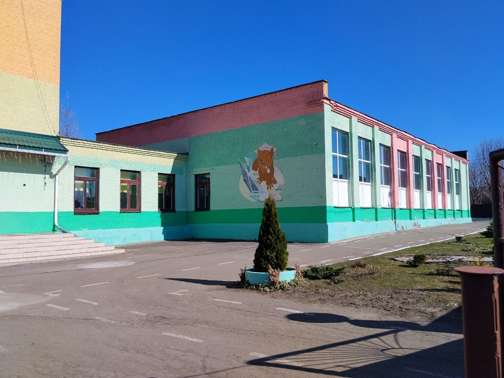

Предварительная запись на личный прием осуществляется по тел. 5 58 60, каб. 1-1.
Об учреждении

Основными задачами государственного учреждения образования «Средняя школа №5 г. Речицы» являются:
Актуализировать и углублять знания учителей о современных технологиях обучения, совершенствовать методики преподавания учебных предметов, овладевать здоровьесберегающими технологиями;
Включать учителей в деятельность по освоению и реализации в образовательной практике технологии визуализации учебной информации, способствующей осмысленному усвоению учащимися учебного материала;
Способствовать освоению учителями способов организации обучения учащихся с широким использованием современных средств визуализации, коммуникации, онлайн взаимодействия дистанционного обучения и образовательных Интернет–ресурсов;
Информировать педагогических работников о нормативно-правовом, научно-методическом обеспечении образовательного процесса по учебным предметам, новинках педагогической литературы.
Вышестоящая организация: Отдел образования Речицкого районного исполнительного комитета
Телефон: +375 2340 65631, E-mail: priemnoy-roo@rechitsa-edu.gov.by